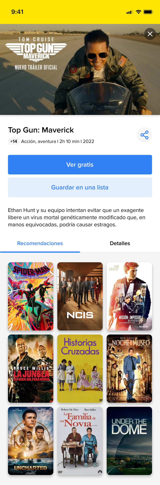
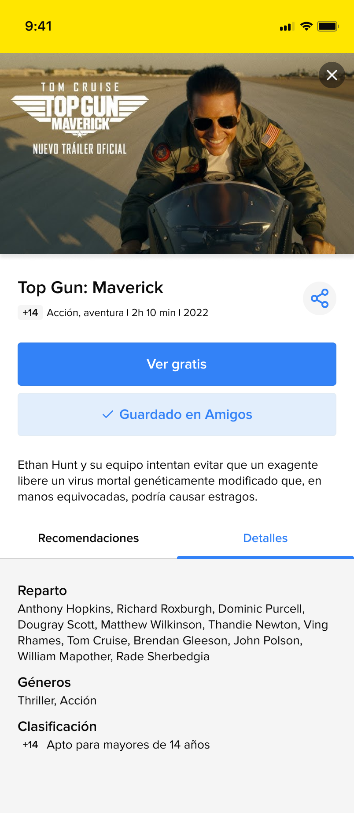
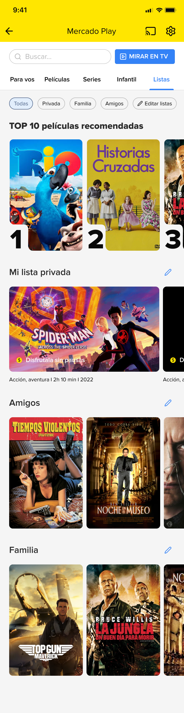

MELI UX Challenge
Estrategia de producto y diseño UI para resolver el descubrimiento social en Meli Play.
Estrategia de producto y diseño UI para resolver el descubrimiento social en Meli Play.
Durante el último mes, la plataforma experimentó una caída del 4% en la frecuencia de uso[cite: 1].
A través de nuestro research, descubrimos que el principal punto de fricción es el descubrimiento de contenido. Los usuarios no confían en algoritmos genéricos ni en críticos desconocidos; su decisión de visualización depende casi enteramente de las recomendaciones de su círculo social más cercano (amigos y familiares)[cite: 1].

"Tengo una conversación de WhatsApp conmigo misma para anotar todas las películas que me recomiendan mis compañeros de trabajo, así después puedo verlas en Meli Play”[cite: 1].

"Nunca me guío por las recomendaciones de los críticos de cine o por las opiniones de quienes no conozco”[cite: 1].

"La tecnología no es mi fuerte. Cuando abro Meli Play, me gustaría tener un lugar con los contenidos destacados por mi familia”[cite: 1].

"Mi papá siempre se olvida el nombre de las series que me quiere recomendar, y termino teniendo que buscar los títulos o los actores en Google”[cite: 1].
El usuario que consume Meli Play es el mismo que navega en Mercado Libre. Al replicar el modelo mental de las "Listas de Favoritos" del e-commerce para el entorno de streaming, reducimos la curva de aprendizaje a cero. Los usuarios ya saben cómo guardar elementos y compartir listas; reutilizar este comportamiento asegura adopción rápida y consistencia con la UI.
Flujo para guardar contenido, crear nuevas listas personalizadas e invitar a miembros del círculo íntimo en menos de 3 clics.




Un ecosistema unificado donde el usuario encuentra el contenido ya filtrado por su círculo de confianza, listo para disfrutar sin fricción.



Evaluar el porcentaje de usuarios activos que interactuarían con la nueva funcionalidad, creando o uniéndose a una lista durante los primeros 30 días post-lanzamiento.
Monitorear el incremento en la apertura diaria de la app, bajo la hipótesis de que las actualizaciones orgánicas del círculo social ayudarán a revertir la caída inicial del 4%.
Comprobar si el acceso rápido a un entorno pre-curado por conocidos disminuye el tiempo promedio de búsqueda previo a darle Play.